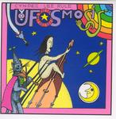

| Artist: | Cyndee Lee Rule |
| Title: | UFOsmosis |
| Label: | self produced IR37029 |
| Length(s): | 59 minutes |
| Year(s) of release: | 2005 |
| Month of review: | [03/2006] |
| 1) | Putting The Rip In Strip | 7.17 |
| 2) | Congress Reel | 2.47 |
| 3) | As Go The Moments | 6.24 |
| 4) | The Inner Light | 2.34 |
| 5) | Scarborough Fair | 2.48 |
| 6) | Seven Cities Of Gold | 9.06 |
| 7) | Assassins Of Allah | 4.21 |
| 8) | Weekend Affair | 6.16 |
| 9) | What On Earth? | 6.29 |
| 10) | Telekinetigram | 4.50 |
| 11) | Something I Should Have Said | 6.03 |
Congress Reel is indeed a folk reel, with Rule going for a fast typically folky kind of play. The drums seem programmed and follow with very quick rolls.
As Go The Moments follows a bit the same vein of the opener: slightly Arabic melodies, wailing style, a bit disjointed and even Crimsonesque in places, with easy going electronics in between. There is a strong contrast between the soft and warm moods of the electronic parts and the disquiet raised by the violin.
The Inner Light is in Indian raga style, done in overdrive with modern rhythms. The violin work is a weavework that again comes over as rather restless, but that fits well in my general impression of sitar music. The song is by George Harrison by the way.
Scarborough Fair is of course a very well-known tune. On this version, the violin plays the lead melody (with slight distortation), but in the back, I guess using guitar, we get even more distortion. The version is relatively fast, and with programmed percussives (there could be some live drumming among it, who knows). Anyway, the rhythm section makes it a very automatic sounding track. Not a version I particularly like. I like it most when the distortion is so strong, I do not recognize it as Scarborough Fair.
Seven Cities Of Gold is with almost ten minutes the longest song on this album. Strikingly, many songs are covers, but the longer ones are songs by the band, and these songs also come out most natural and best. This is often due to the large amount of electronics and the fact that the violin, here played in Stuart Gordon style (Hammill), is more melodic. I guess the band also does less its best to sound different from the original. The melody is open and friendly. Lots of melodies and instruments vie for your attention, giving a bit of a fugue feel to the whole affair, but some of the melodies (especially those on acoustic guitar) are repetitive and evoke Paco de Lucia and the like. The end result is a bit disjointed.
Assassins Of Allah is a jumpy Hawkwind cover. The speed is high, that holds as well for the original. The rhythm section goes for pacey percussion this time, in a strongly monotonous way, but it fits the song. Highly energetic.
We have now left the covers behind. Weekend Affair opens with dreamy Fender Rhodes and soft washes of violin. Later the beat sets in, and it seems we have arrived in Daft Punk territory. Not an improvement. Typical for the band is the middle part in which many melodies and instruments vie for attention, the drums drone on, and the violin meanders over all. It makes the music sound quite complex, although the separate lines in themselves are either monotonously repeated, or meander without coming back to the same trail.
What On Earth? has strong percussive elements, but they stay subdued. The overall effect is a bit marimba like. For the rest, we get the same type of music that characterizes the band's own songs. Telekinetigram is a spacey opener, but soon we arrive at hectic, wailing pieces of violin. In the back, the electronics dribble almost unnoticed. Too chaotic.
Something I Should Have Said is the closer of this album. It is of the dreamy electronics kind with light percussives. Slowly, the violin and heavier percussives and rhythm guitar come in, but the build-up is gradual. One of the more successfull tracks.